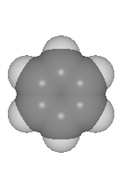
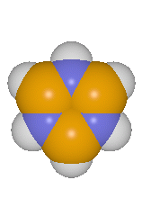
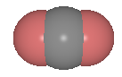

Computational Chemistry at the AHPCC



Table of Contents
|
|
Introduction |
|
|
Getting Started |
|
|
Programs Available at the AHPCC |
|
|
Computational Chemistry Workshop |
For best results, view using Netscape, and make sure dithering is turned on.
Introduction
Quantum chemical ab-initio programs attempt to use the principles of quantum mechanics to obtain molecular properties of interest to a chemist or physicist. Such calculations can obtain molecular geometries, vibrational frequencies and barriers to rotation, ionization potentials and electron affinities, and many other properties. Quantum chemistry calculations provide a rapid and inexpensive alternative to experimental techniques for obtaining such properties. They are widely used both as a predictive tool and to confirm or explain experimental results. Quantum chemistry calculations are applicable to a wide range of chemical problems, including enzymology, thermochemistry of combustion, homogeneous catalysis, cluster science, and organic reaction mechanisms.
Many packages are available with varying capabilities, ease of use, and performance. These programs are often quite large and complex. Typical source code may be several hundred megabytes, while executable file(s) can be as large as several tens of megabytes. State of the art calculations using a typical workstation can require as much as a hundred or more megabytes of RAM, a gigabyte or more disk space, and take several days to several weeks to complete. Even larger calculations can be done with more powerful computers or clusters of workstations. Parallelization of these codes is an important step in increasing the capabilities and performance of the programs.
Currently the Albuquerque High Performance Computing Center has the quantum chemistry packages GAMESS, Gaussian, and NWChem installed and available for public use. In addition, the molecular visualization programs MolDen, RasMol, and XMol and the utility program Babel are available.
Getting Started
It is assumed that you already have an account at the AHPCC. If not, go here.
To use a particular program, you must add the executable path to your PATH variable. The easiest way to do this is to add the following lines in your .cshrc file. You will have to source your .cshrc file to make it active in the current session.
set path = ($path /nfs/babel) set path = ($path /nfs/gamess) set path = ($path /nfs/gaussian) set path = ($path /nfs/molden) set path = ($path /nfs/nwchem) set path = ($path /nfs/rasmol) set path = ($path /nfs/xmol)
The visualization software installed at the AHPCC are all window based programs. To use them from your own workstation or x-term follow these steps:
|
|
Log into your workstation or x-term. |
|
|
Add an AHPCC machine to your xhost list. (xhost + ArcMachine.ahpcc.unm.edu) |
|
|
Telnet to an AHPCC workstation. (telnet ArcMachine.ahpcc.unm.edu) |
|
|
Set the DISPLAY environmental variable to your machine name. (setenv DISPLAY MyMachine.unm.edu:0) |
Programs Available at the AHPCC
Installation Status
The following table indicates program availability at the AHPCC. Click on a programs name for specific details about each program.
| Version | HP | IBM | SGI | SP1 | SUN | |
| Babel | 1.5 | - | S | S | - | S |
| GAMESS | 10-31-96 | S | S | P | P | S |
| Gaussian | 94d3 | S | S | P | P | S |
| MolDen | 3.2 | - | S | S | - | S |
| NWChem | 2.0 | - | S | P | P | - |
| RasMol | 2.6 | S | S | S | - | S |
| XMol | 1.3.1 | - | S | S | - | S |
| S / P / - indicates serial / parallel / no version installed. | ||||||
Program Speed Comparison
It is often difficult to get a fair comparison of program speeds. Every program will have its own strengths and weaknesses. As a quick test a RHF/cc-pVDZ(6d) calculation for C6H6 (Benzene) was run on our SP1. In all cases molecular symmetry was not used and the same convergence thresholds were used. Timing information is shown below.
| Nodes | GAMESS | Gaussian | NWChem |
| 1 | 7000.2s | 1522.80s | - |
| 2 | 3560.4s | 933.18s | 4195.5s |
| 4 | 1792.7s | 552.68s | 2125.3s |
| 8 | 927.6s | 439.38s | 1098.5s |
In this case Gaussian outperforms both GAMESS and NWChem. This does not mean that GAMESS or NWChem should never be used. Both may be able to do other types of calculations faster than Gaussian, and there are some things they can do that Gaussian can not do at all. However, for typical single point or geometry optimization calculations, Gaussian will almost always be the best choice.
Which program should you use?
All three programs are capable of doing typical self consistent field (SCF) geometry optimization and frequency calculations. If you wish to do a more elaborate calculation such as post SCF methods or property calculations then you should check each programs documentation to verify it meets your requirements. Try running a small calculation with each program. You may prefer the input or output format of one particular program. Remember that Gaussian has the greatest number of capabilities and is the faster program in most cases.
Which machine should you use?
You should run all but the smallest of calculations on the SP1. Do not request more than 32MB of RAM on a workstation. Do not run calculations that will require more than half an hour of CPU time on a workstation. Do not run calculations that require large amounts of disk space such as frequency or post SCF calculations on a workstation. Small calculations that meet these requirements can be run on any of the AHPCC workstations. You may wish to use the "ps -e" command to find the lesser used machines.
Computational Chemistry Workshop
The AHPCC offers a workshop on computational chemistry approximately once a year. The workshop is designed to be an introduction to the parallel packages installed at the AHPCC. Topics include the following:
|
|
An introduction to quantum chemistry and the goals of an ab-initio program. |
|
|
A comparison of the capabilities of selected programs. |
|
|
A description of installation, structure, and expandability of selected codes. |
|
|
An explanation of sample input and output files. |
|
|
Hands on experience creating input files and running calculations. |
A basic understanding of the UNIX operating system is highly recommended. Knowledge of basic physics and chemistry is also recommended.
 |
April 1998, editor@ahpcc.unm.edu

| The
University of New Mexico Albuquerque High Performance Computing Center Galles Building - 1601 Central Avenue, NE Albuquerque, NM 87131 Phone # 505.277.8249000000Fax # 505.277.8235 |
Last
Modified: July 31, 2000
|